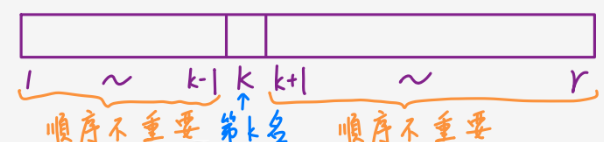
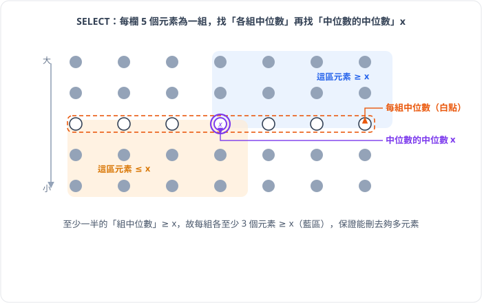

第一節 最小值與最大值
單獨求最小值
最直覺的方法：遍歷整個陣列，持續更新目前的最小值
1 | MINIMUM(A) |
需要 $n - 1$ 次比較，每個元素至少要被比對一次，因此下界就是 $n - 1$，時間複雜度為 $\theta(n)$
同時求最小值與最大值
要同時求最小值與最大值，可以分別跑一次 (各 $n-1$ 次，共 $2(n-1)$ 次比較)，但實際上不需要如此麻煩
| 情況 | 比較次數 |
|---|---|
| $n$ 為奇數 | $3\lfloor n/2 \rfloor$ |
| $n$ 為偶數 | $3(n-2)/2 + 1 = 3n/2 - 2$ |
<註1> $n$ 為偶數：這裡可以用 $n - 2$ 的原因是因為我們一開始可以直接取出前兩個比較一次後分別當 max / min，這也解釋了為甚麼後面要 $ + 1$
<註2> $n$ 為奇數：取出第一個元素同時當 max / min，因此是 $3\lfloor n/2 \rfloor$
第二節 Randomized Select
Pseudocode
RANDOMIZED-SELECT 的核心概念借用 Quick Sort 的 PARTITION，但是是隨機取 pivot 的 RANDOMIZED-PARTITION，但它只遞迴進入一側（因為只需要找第 $i$ 小，另一側無需處理），這邊 PARTITION 的內容在第七章講 Quick Sort 的地方有詳細說明，這裡不再贅述
1 | PARTITION() |
1 | RANDOMIZED-PARTITION(A, p, r) |
1 | RANDOMIZED-SELECT(A, p, r, i) |
說明
做完 RANDOMIZED-PARTITION 之後，pivot 被放到位置 $q$，此時：
- $A[p..q-1]$ 的所有元素都 $\le A[q]$（順序不重要，只知道都比 pivot 小）
- $A[q+1..r]$ 的所有元素都 $> A[q]$（順序不重要，只知道都比 pivot 大）
- $k = q - p + 1$ 代表 pivot 是 $A[p..r]$ 中第 $k$ 小的元素

| 情況 | 時間複雜度 | 說明 |
|---|---|---|
| 最差 (worst) | $\Theta(n^2)$ | 每次 partition 都切出 0 : n-1 的極端狀況 |
| 最好 (best) | $\Theta(n)$ | 每次恰好切到中位數 |
| 平均 (average) | $\Theta(n)$ | 類似 Quick Sort，期望值為線性 |
第三節 線性時間求法
雖然 RANDOMIZED-SELECT 的期望值是 $\Theta(n)$，但最壞情況仍是 $\Theta(n^2)$，問題就在於 RANDOMIZED-SELECT 不能保證求到足夠靠近中位數的值。若需要保證最壞情況也是線性時間，必須使用確定是線性時間的 SELECT 演算法
Pseudocode
1 | SELECT(A, start, end, i) /* 找第 i 小的元素 */ |
說明

圖片中每一欄代表一組（5 個元素）。白色節點是各組的中位數，被圈起來標記的 $x$ 是中位數的中位數。箭頭從大元素指向小元素
至少有一半的中位數 $\ge x$，而只要中位數 $\ge x$，就代表那一組內還有 $\ge 3$ 個元素比 $x$ 大。這需要扣除掉 $x$ 自己那組與不滿 5 人的最後一組，因此我們可以確定：
$$\text{至少有 } \left\lceil \frac{1}{2} \cdot \frac{n}{5} \right\rceil \cdot 3 - 6 \ge \frac{3n}{10} - 6 \text{ 個元素} > x$$
同理，也至少有 $\frac{3n}{10} - 6$ 個元素 $< x$。因此，在最壞情況下，另一邊較大的子問題規模為：
$$n - \left(\frac{3n}{10} - 6\right) = \frac{7n}{10} + 6$$
| 步驟 | 時間 | 說明 |
|---|---|---|
| 步驟 1：分組 | $O(n)$ | 線性掃描 |
| 步驟 2：每組排序取中位數 | $O(n)$ | 每組固定 5 個元素，$O(1)$ 次比較，共 $n/5$ 組 |
| 步驟 3：遞迴找中位數的中位數 | $T(n/5)$ | 對 $n/5$ 個中位數再度遞迴呼叫 SELECT |
| 步驟 4：PARTITION | $O(n)$ | 線性時間 |
| 步驟 5：遞迴選擇 | $T(7n/10 + 6)$ | 最壞情況子問題規模 |
遞迴式為：
$T(n) = T\!\left(\frac{n}{5}\right) + T\!\left(\frac{7n}{10} + 6\right) + O(n)$
代換法（Substitution Method）：
(這邊在第四章有詳細說明步驟)
猜測 $T(n) \le cn$，驗證：
$T(n) \le c\cdot\frac{n}{5} + c\left(\frac{7n}{10} + 6\right) + O(n)$
$= c\cdot\frac{n}{5} + \frac{7cn}{10} + 6c + O(n)$
$= cn - \frac{cn}{10} + 6c + O(n)$
$\le cn \quad \text{（當 } n \ge 80 \text{ 且 } c \text{ 足夠大，例如 } c = 200\text{）}$
因此 SELECT 的時間複雜度為 $\Theta(n)$，最壞情況也是線性時間。
<註> 此方法亦可摘取部分步驟作為 Quick Sort 的 PARTITION，可將 Quick Sort 的 worst case 從 $O(n^2)$ 降為 $O(n \lg n)$
總結
| 演算法 | 時間複雜度（平均） | 時間複雜度（最壞） | 策略 |
|---|---|---|---|
| MINIMUM / MAXIMUM | $\Theta(n)$ | $\Theta(n)$ | 線性掃描，$n-1$ 次比較 |
| Simultaneous Min & Max | $\Theta(n)$ | $\Theta(n)$ | 成對比較，$\approx 3n/2$ 次比較 |
| RANDOMIZED-SELECT | $\Theta(n)$ | $\Theta(n^2)$ | 隨機 pivot + 單側遞迴 |
| SELECT（中位數的中位數） | $\Theta(n)$ | $\Theta(n)$ | 確定切在較好的 pivot，保證一定的比例 |
參考文獻
T. H. Cormen, C. E. Leiserson, R. L. Rivest, and C. Stein, Introduction to Algorithms, Second Ed., The MIT Press, 2001.